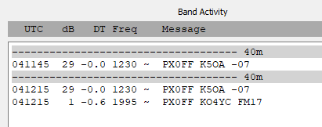

[
Date Prev
][
Date Next
][
Thread Prev
][
Thread Next
][
Date Index
][
Thread Index
]
[NCDXC Chat] DX SPOT PX0FF 40m FT8
To
: NCDXC Discussion List <
chat@ncdxc.org
>
Subject
: [NCDXC Chat] DX SPOT PX0FF 40m FT8
From
: Will Shattuck <
willshattuck@gmail.com
>
Date
: Tue, 15 Oct 2024 21:13:57 -0700
Dkim-signature
: v=1; a=rsa-sha256; c=relaxed/relaxed; d=gmail.com; s=20230601; t=1729052049; x=1729656849; darn=ncdxc.org; h=to:subject:message-id:date:from:mime-version:from:to:cc:subject :date:message-id:reply-to; bh=BzJMO6JjHc+iB0OoHBscYGgrZMc/GPlwvR4LkkWF8UI=; b=Ic35pbAqGuuCmtpqIvCLM68Ona+ngNcArZGs17fjknq9do57GnTq2xICzh8y6gwA4z ymGdY5aISUUNgvqlGDLggLRxMxgoKtmT5Sh958Nwi2yKMZ7rco/WSuFpRFI3i7da2sN2 c1e7/Wn2xBam4PeSEkgA0JWI/w/Ap93oxsRdyijnFEfr8vFRBJ3CzopiDDuETzSrfYg0 v741+u9i/U4NR63yk2k80Njn5LlcfArBXM30Ah3yeGebglZiRjr9aW/WRCPaeltyGCsh H0SU7mt4m5/uKmDQyIZBMiobiMKQ6k74ntG+tsxPA4NuW45i6Yjo9M3apuHCog9QVqSO aAsQ==
List-archive
: <
http://mail.ncdxc.org/mailman/private/chat_ncdxc.org/
>
List-help
: <
mailto:chat-request@ncdxc.org?subject=help
>
List-id
: NCDXC Discussion List <chat.ncdxc.org>
List-post
: <
mailto:chat@ncdxc.org
>
List-subscribe
: <
http://mail.ncdxc.org/mailman/listinfo/chat_ncdxc.org
>, <
mailto:chat-request@ncdxc.org?subject=subscribe
>
List-unsubscribe
: <
http://mail.ncdxc.org/mailman/options/chat_ncdxc.org
>, <
mailto:chat-request@ncdxc.org?subject=unsubscribe
>
This is from that "what's this mode" email. I opened up wsjt-x and i am decoding senders to this station but I can't copy them. I can barely hear them

--
Will Shattuck
KN6TZK
Prev by Date:
Re: [NCDXC Chat] What's this mode?
Next by Date:
Re: [NCDXC Chat] What's this mode?
Previous by thread:
Re: [NCDXC Chat] What's this mode?
Next by thread:
[NCDXC Chat] SPOT: C21MM, FT8, normal mode, 7.057, Nauru
Index(es):
Date
Thread